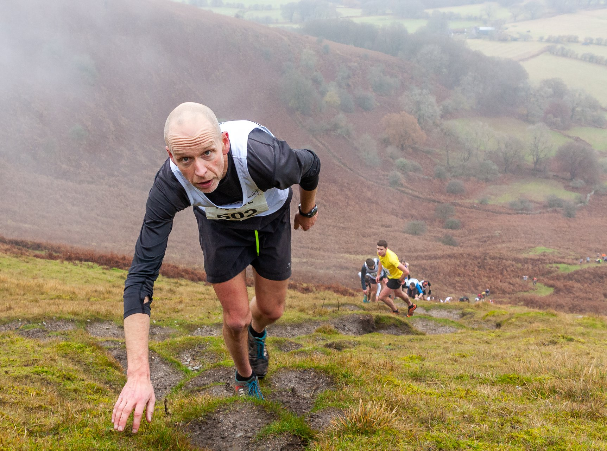

Route
This ain’t no parkrun. The toughest, steepest face of the Blorenge is serious challenge to even the most seasoned fell runner. Navigation and routing is a key part of fell running. The most obvious route has been marked, but if you want to gain a competitive edge a recce is recommend.


The start
The tunnel


The tram road
The steep bit

The trig, and now back down.